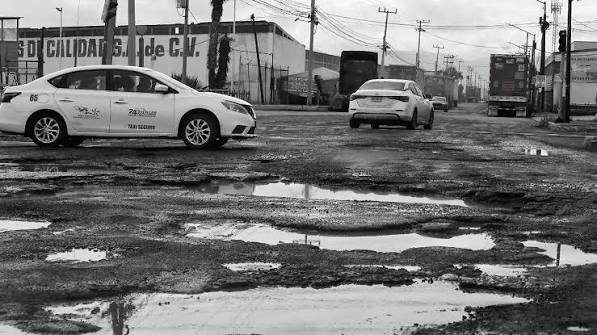
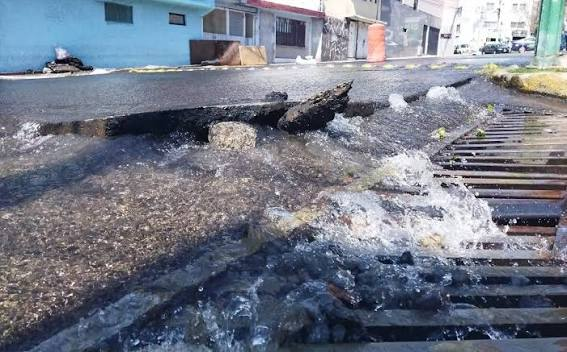
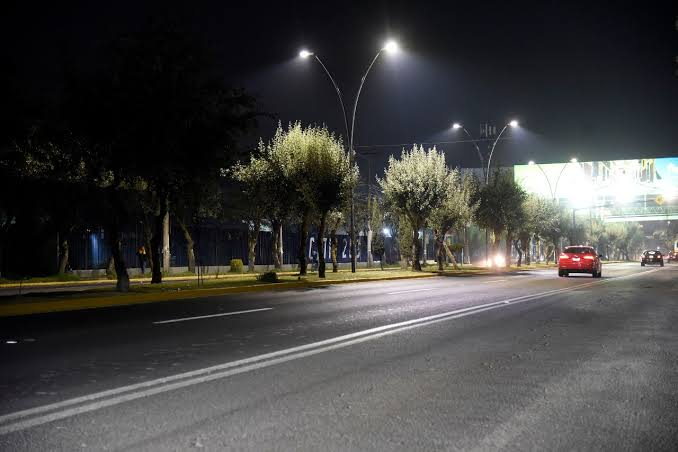

¿Qué problema deseas reportar hoy?

Baches y Vialidad
Reporta baches, banquetas rotas o problemas de pavimentación en tu calle.
Crear Reporte
Agua y Drenaje
Notifica fugas de agua potable, falta de suministro o drenajes tapados.
Crear Reporte
Alumbrado Público
Informa sobre lámparas fundidas, postes dañados o cortes de energía.
Crear ReporteSeguridad
Reporta zonas inseguras, falta de vigilancia o luminarias en puntos críticos.
Crear Reporte